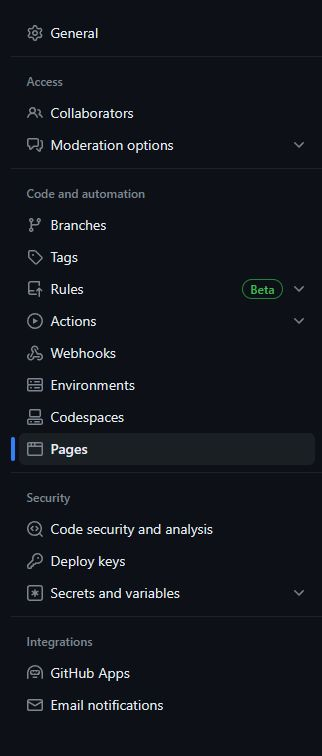
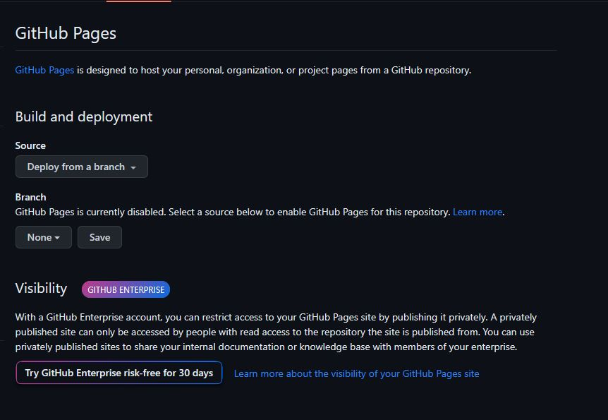
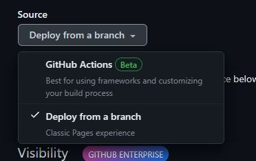
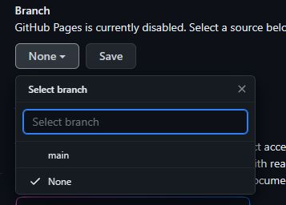
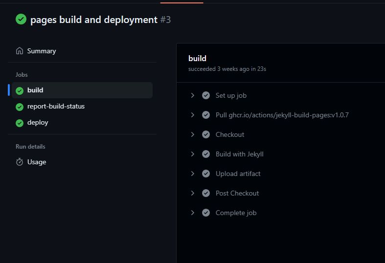

Página de CI-CD
Pasos para desplegar un sitio en GitHub Pages
- Crear un repositorio cuyo nombre debe ser el nombre del perfil o la organización
- El repositorio debe ser público
- Este repositorio servirá como punto de entrada para redireccionar a los demás proyectos
- Ejemplo: semillerosolid.github.io
- Creamos un segundo repositorio para el sitio
- Este repositorio puede tener cualquier nombre
- En el apartado de configuración buscamos en la columna izquierda la opción "pages"

- Entre las diferentes opciones de Pages, nos fijaremos en dos específicas, "Source" y "Branch"

- Source: Es la fuente de donde vamos a desplegar el sitio, seleccionaremos Deploy from branch

- Branch: Es la rama principal de nuestro repositorio

- Una vez esté todo seleccionado, guardaremos usando el botón Save
- Es importante esperar a que la acción automatizada termine su proceso y nos arroje un estado de confirmado

- Ahora para acceder a nuestro sitio, debemos poner primero la dirección principal, es decir el nombre que le pusimos a nuestro repositorio principal
- Ejemplo: https://semillerosolid.github.io/
- Luego del slash ("/") pondremos el nombre del segundo repositorio
- Ejemplo: https://semillerosolid.github.io/ci-cd/
- Listo, para argregar más sitios a nuestra organización solo se deben repetir los pasos del 2 al 5